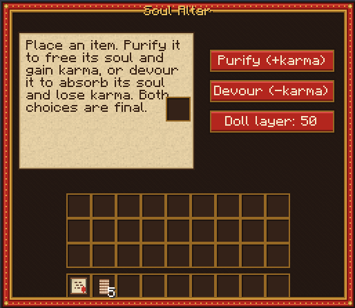
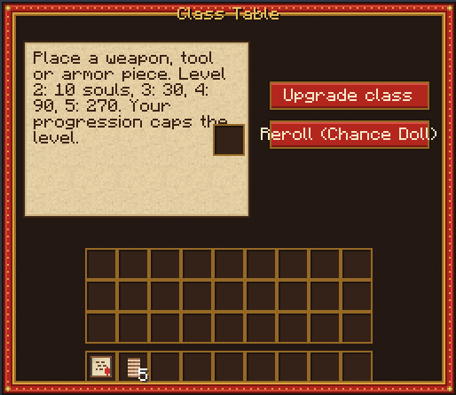
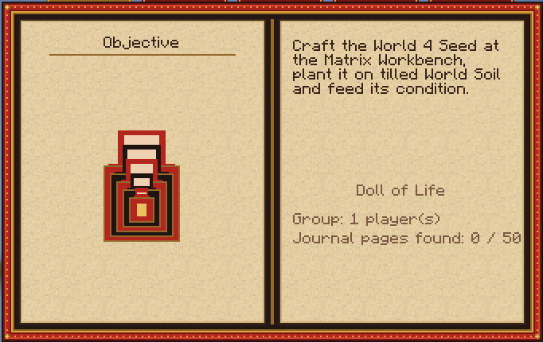
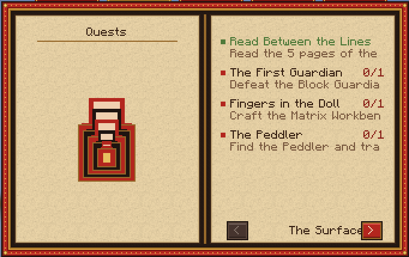

Systems
What keeps you alive, what you trade for power, and how your gear grows. Everything here works the same in solo and on a server.
Survival
Life Doll
You carry a doll made of layers. It gets its first layer when the Spore Queen falls, a second after the Light Eater and a third after the Master of Seasons. Every boss you beat restores one layer, and the Soul Altar rebuilds one for 50 souls.
When you die
- If your Doll of Life has a layer left, it breaks and you get back up on the spot. A doll can save you at most once a minute.
- Otherwise you die, and a death chest keeps your inventory where you fell. It never despawns; inside a boss arena it waits at the entrance.
- If you placed a charged Soul Cradle in that world, you wake up next to it.
- If not, you are sent back outside, to your usual spawn point.
Soul Cradle
A small painted cradle that lets you respawn inside a world. It holds 3 charges; feed it one resource from that world and 5 souls to add another. One active cradle per player and per world.
- 4Oak Planks
 1Wool Thread
1Wool Thread 2Roots
2Roots
Return Thread
Pulls you back to the World Block. You can also simply walk back onto the Threshold where you arrived.
- 2Wool Thread
- 1Ender Pearl
A broken World Block
Break a World Block and everyone inside is pushed out safely. The block becomes a Cracked Doll tied to that exact world: set it down again and the world comes back with its bases and chests, unstable for 20 minutes. It is also how you move a world.
Souls and karma
Every item carries a soul whose weight depends on its rarity. Put it on the Soul Altar and choose, for good: purify it to free the soul and gain karma, or devour it to absorb the soul and lose karma. Either way you keep the souls, which pay for class upgrades, cradle charges and doll layers.
| Rarity | Souls |
|---|---|
| Common | 1 |
| Rare | 10 |
| Epic | 30 |
| Legendary | 100 |
| Any boss | 100 |
Karma runs from −100 to +100. An item gives one point of karma per 10 souls, and less each time you repeat the same offering. Quests with a choice move it by 5 or 10.

What karma changes
- +50
The peoples welcome you. Mutual-help quests open up and the brighter world variants answer you.
- +25
Prices are 10% lower. People trust you.
- 0
Neither saint nor devourer. Every choice still counts.
- −25
Prices are 10% higher, but the first black market opens to you.
- −50
Some villages turn hostile. Pact quests and forbidden loot await.
At ±100, karma also tilts the variants of the worlds you open, and it decides between two of the three endings: seal the creature away, or absorb its power.
Gear classes
Every weapon, tool and armour piece gets a random class when it is crafted. The Class Table raises its level with souls; your progression caps how far you can go.
| Class | Bonuses | Found on |
|---|---|---|
| Guardian | Armor, knockback resistance | Armour |
| Berserker | Damage, attack speed | Weapons, armour |
| Prowler | Movement speed, dodge | Armour, light weapons |
| Reaper | Life steal, soul gain | Weapons, armour |
| Survivor | World effect resistance, recovery | Weapons, armour |
| Prospector | Mining speed, ore luck | Tools |
Upgrading
| Level | Total bonus | Souls |
|---|---|---|
| 2 | +10% | 10 |
| 3 | +20% | 30 |
| 4 | +35% | 90 |
| 5 | +50% | 270 |
Level 1 to 5 costs 400 souls per piece.
Level cap
| Progression | Max level |
|---|---|
| World 2 done | 2 |
| World 4 done | 3 |
| World 6 done | 4 |
| World 8 done | 5 |
Chance Doll
Rerolls an item into a different class it can hold, and keeps its level. The first reroll costs 20 souls, and the price doubles each time on the same item: 20, 40, 80, 160.
- 2Oak Planks
- 1Red Dye
- 2Gold Ingot

Things inside things
The name is the rule: something can always hold something else. These systems unlock as the story goes on.
| System | Effect | Unlocked |
|---|---|---|
| Doll of Life | Each layer survives one death | Worlds 1, 5, 8 |
| Nesting chests | A chest that holds a smaller one | World 2 |
| Nesting creatures | A defeated mob releases a smaller one | World 2 |
| Refuge doll | A pocket base you carry | World 3 |
| Layered armour | One layer protects the next | World 4 |
| The final boss | Ten shells, one per world | World 10 |
Gates
- Enchanting, anvils and the Nether open after World 2.
- Diamonds come back in World 5: four Diamond Fragments make one at the Dark Altar.
- Elytra stay grounded in Worlds 4, 6 and 9 until World 8 is done.
- The End opens after World 8.
Groups and servers
A player alone is a group of one. Worlds, progression and permissions belong to the group: up to eight players by default. Each group gets its own 3,000 by 3,000 block parcel in every world, walled off from the others, and a World Block can only be used by its group.
/matriochka group info | Your group, its members and defeated bosses |
|---|---|
/matriochka group invite <player> | Invite a player into your group |
/matriochka group join | Accept the pending invitation |
/matriochka group leave | Leave your group |
/matriochka karma show | Your karma and souls |
The mod runs on the server and on every client. All rules, damage and rewards are decided by the server; nothing needs an online account or service.
The Journal, quests and achievements
The Artisan's Scroll arrives on your first login and turns into the Journal when the Guardian falls. Its tabs track your objective, quests, karma and worlds. There are 64 optional quests (4 on the Surface, 6 per world) and 100 achievements, 10 per world, two of them hidden. Fifty Journal pages and ten hidden dolls are scattered through the worlds; nest the dolls in order and something smaller opens.


Titles you can earn
- Apprentice
- Ash Skin
- Closed Eyes
- Cold Blood
- Glow
- Head Down
- Iron Lungs
- Out of Time
- Painted Cape
- Seamless
- Untethered
- Wall Walker
- Child of the Wind